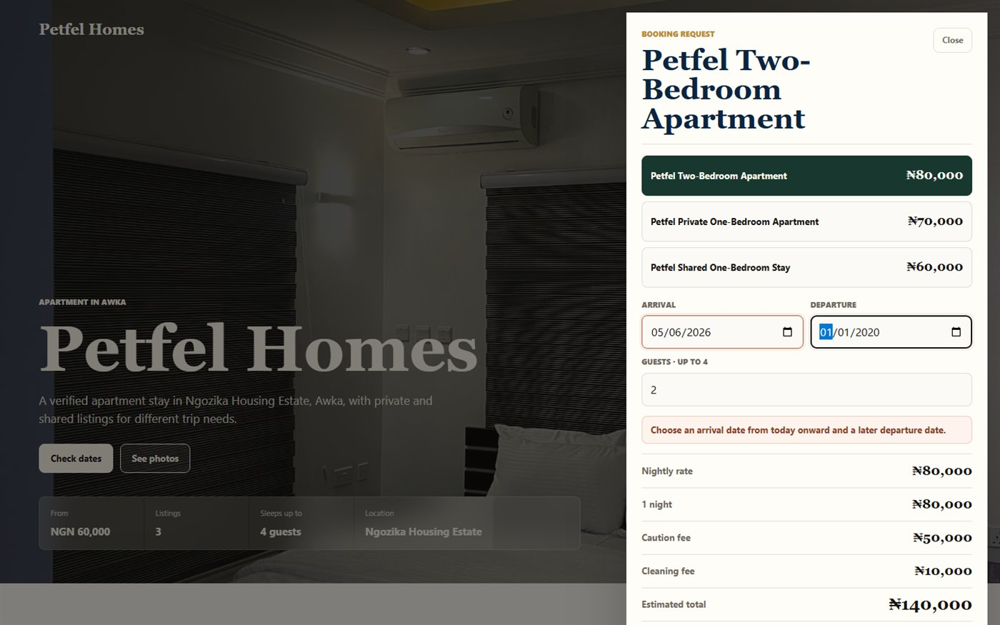
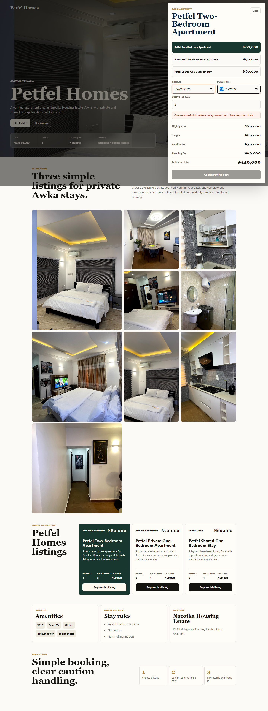
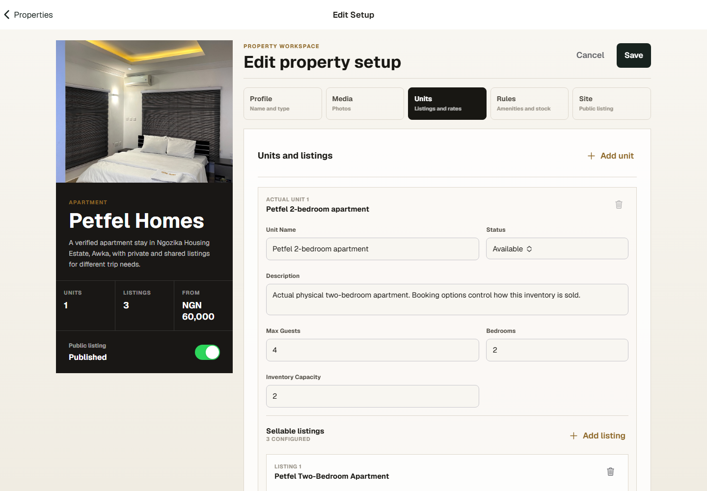

What it is
The product helps property owners publish listings, receive booking requests, manage guest records, collect payment, run check-in and checkout, track money in and out, and keep a usable owner workspace.
Product record
A shortlet and property operations platform for owners who need public listings, guest requests, bookings, payments, finance, checkout, staff, and property records in one place.
Product views
The product has to serve both sides: guests need a simple booking path, owners need reliable control of rooms, rates, payments, and checkout.



The product helps property owners publish listings, receive booking requests, manage guest records, collect payment, run check-in and checkout, track money in and out, and keep a usable owner workspace.
The repo uses an Angular/Ionic owner app, a Nest-style server, Firebase hosting, Supabase-backed persistence, Paystack checkout and webhook handling, reusable shared interfaces, and deployment scripts for the web and API surfaces.
The most important decision was modeling the difference between a physical unit and a sellable guest option. That makes it possible to sell a full apartment, private room, or shared stay without double-booking the same underlying inventory.